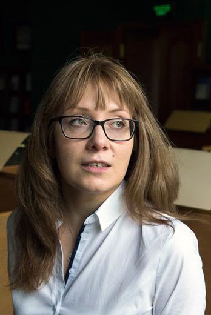

Elena Korchmina
I explore economic history

Photo: © Павел Александров
Photo: © Павел Александров
«Секрет Фирмы»
"Back in 1904-1906, it amazed me on what grounds an historical embroglio (nedorazumenie) as the Russian Empire has rested."
- S.B. Veselovsky
I am an Assistant Professor at the History Department at Higher School of Economics, Moscow. I research the Economic History of Early Modern Europe, especially the Fiscal History of European Elites. I have a PhD in Russian History and have since specialized in Russian economic history.
Research Areas: Economic History of Eastern Europe; Taxation; History of European Nobility.